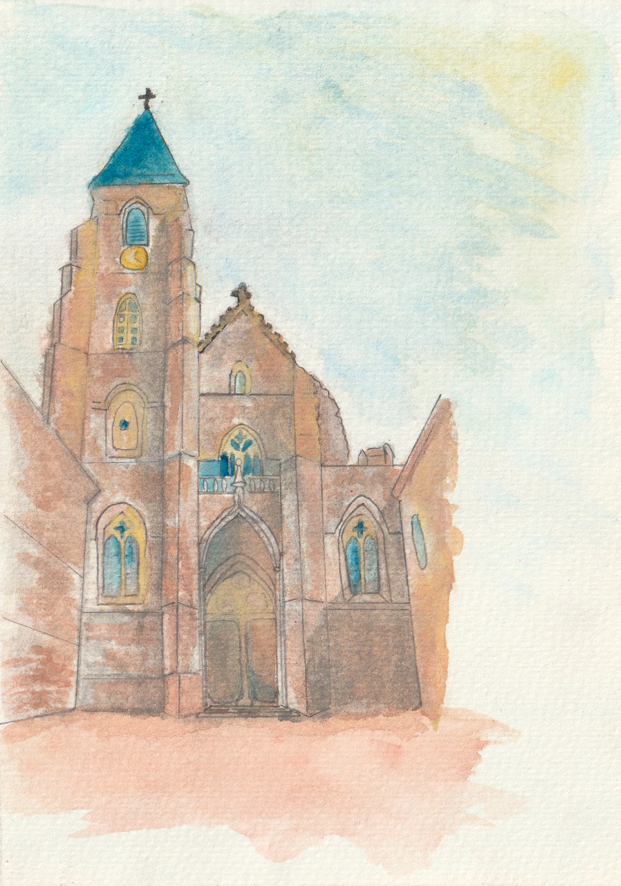
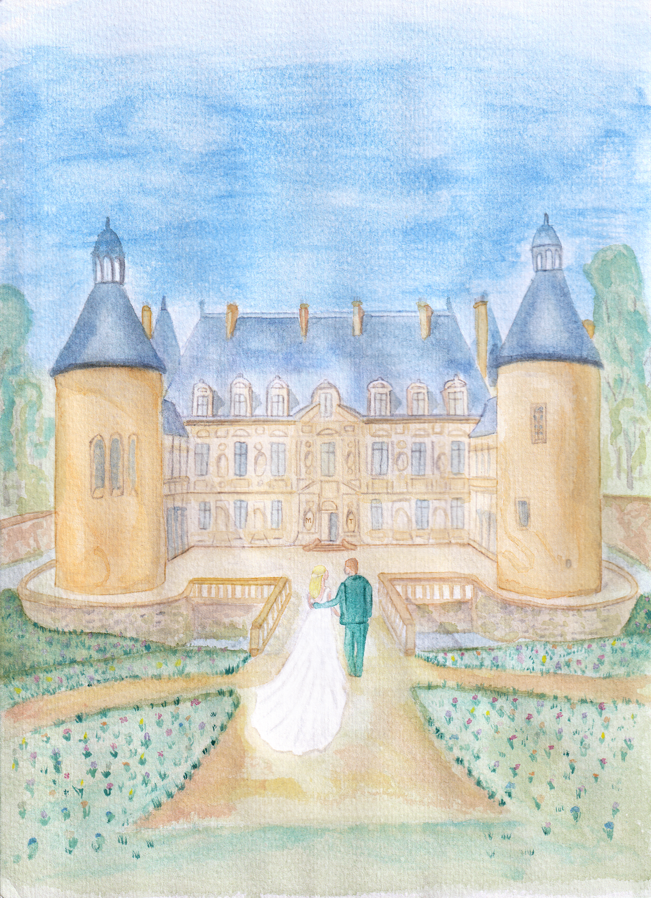

Nous nous marions
24 juillet 2027 · Bourgogne
Nous serions heureux de partager cette belle journée avec vous.
Une journée à partager
Nous avons la joie de vous inviter à célébrer notre mariage le 24 juillet 2027, en Bourgogne.
Nous avons hâte de vous retrouver pour une journée pleine d’amour, de joie et de beaux souvenirs, dans un cadre qui nous ressemble.
Le 24 juillet 2027
Les horaires définitifs seront précisés à l’approche du mariage.
Église de Saint-Seine-l’Abbaye
Dans les jardins du Château de Bussy-Rabutin
Dans les jardins du Château de Bussy-Rabutin
Château de Bussy-Rabutin
Château de Bussy-Rabutin
En Bourgogne


Pour préparer votre venue
Une tenue de cérémonie dans laquelle vous vous sentez bien et qui respecte le dress code. Pensez à prévoir une seconde paire de chaussure adaptée aux extérieurs et aux jardins.
Merci de nous confirmer votre présence avant le 01.05.2027, via le formulaire ci-dessous.
Certains horaires restent à confirmer. Nous mettrons cette page à jour dès que les détails seront arrêtés.
Vous pouvez nous contacter directement si vous avez besoin d’une information supplémentaire pour organiser votre venue.
Nous espérons vous voir
Merci de nous indiquer si vous serez parmi nous. Cela nous aidera à préparer au mieux cette journée.
Merci de répondre avant le 01.05.2027.